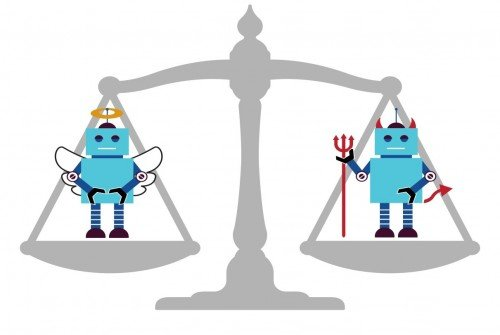
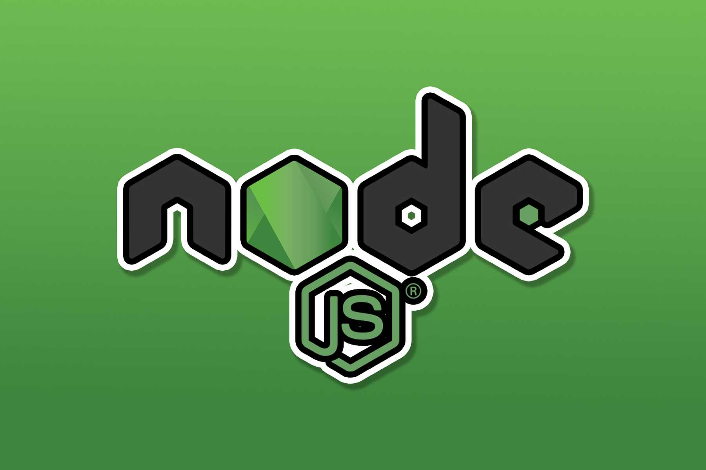

Uloga informacionih tehnologija u medicinskoj nauci
Informaciona tehnologija (IT) je primjena računara i telekomunikacijske opreme za pohranu, dohvaćanje, prijenos i manipulaciju podacima. Danas se informaciona tehnologija koristi u širokom rasponu područja, a jedno od tih područja je medicinska nauka, koja je poznata kao Zdravstvena informaciona tehnologija (Health Information Technology - HIT) .
To je podrazumijeva obradu podataka koji uključuju računarski hardver i softver koji se bave pohranom, pronalaženjem, dijeljenjem i korištenjem medicinskih podataka, podataka i znanja za komunikaciju i donošenje odluka. HIT, tehnologija predstavlja računare i komunikacijske atribute koji se mogu umrežiti za izgradnju sistema za premještanje zdravstvenih podataka.
IT u medicini se bavi: resursima, uređajima i metodama potrebnim za optimizaciju prikupljanja, pohranom, pronalaženjem i korištenjem informacija u zdravstvu i biomedicini.
Alati medicinske informatike uključuju računare, kliničke smjernice, formalnu medicinsku terminologiju i informacijske i komunikacijske sisteme. Primjenjuje se na područja sestrinstva, kliničke njege, stomatologije, farmacije, javnog zdravstva, radne terapije i (bio)medicinskih istraživanja.
Korištenje IT-a u medicinskom obrazovanju
Razvojem IT-a došlo je do značajnih promjena u medicinskom obrazovanju u cijelom svijetu. Promjena je u tome što je većina studenata medicine danas kompjuterski obrazovana.
Navest ćemo neke oblasti koje su korisne u medicinskim svrhama iz IT-a.
Šifrarnici
Skoro sve informacije u medicini treba da se šifruju specifičnim šifrarnicima. Postoji veliki broj šifrarnika u svijetu a i kod nas su u praksi neki međunarodni (MKB10, ICPC2, DRG, ATC,....), a ponekad i neki lokalni (npr. šifrarnik RZZO).
Medicinska terminologija
Svi medicinski izrazi su klasifikovani po raznim klasifikacijama verbalnih medicinskih izraza. Medicinski softver treba da ima mogućnost vezivanja teksta koji doktor unese sa kodnim sistemom.
Poznatiji sistemi za klasifikaciju medicinskih izraza su:
SNOMED,
GALEN
.
Interoperabilnost
Razmjena podataka između različitih sistema može da se radi pomoću mnogih standarda, npr. preko:
HL7 standarda 2 (slog message protokol),
2.5 (xml message protokol),
EDIFACT,
DICOM,
WS (Web Servisi).
itd...
Plan liječenja
Svaki informacioni sistem koji se bavi pacijentima mora da obezbjedi mogućnost pravljenja plana liječenja koji će kasnije biti lahko dostupan i po kome će doktor moći da prati pacijenta. Naravno, plan liečenja mora da ima i mogudnosti izmjene, dopune i pravljenje zaključaka na osnovu razultata lečenja, odnosno stanja pacijenta.
Praćenje stanja bolesnika
Svaki informacioni sistem treba da omogući praćenje bolesnika, u smislu kako reaguje na propisanu terapiju i da se pojavljuju odgovarajuća upozorenja doktorima a vezano za stanje pacijenata.
E-Health sistemi
Postoji potreba za kreiranjem velikog broja manjih ali visoko-tehnoloških projekata u zdravstvu, tipa:
Konsultacija pacijenta sa doktorom putem interneta,
Naručivanje lijekova putem interneta ili putem mobilnog telefona,
Praćenje stanja rizičnih pacijenata putem mobilnog telefona,
Plan obuke i vršenje online obuke doktora i osoblja,
Liste čekanja za pojedine operacije ili specijalne preglede.
Zaštita privatnosti podataka
EU zakoni o zaštiti prava pacijenta koji su prihvaćeni ili su u postupku prihvaćanja i kod nas. Po ovim zakonima svaki medicinski sistem ima obavezu da obezbijedi visoki nivo bezbijednosti podataka.
EMR - Electronic medical records
IT je bio od velike pomoći medicinskom sektoru. Primjer značajnog napretka koji je IT pružio bolnicama je razvoj električkih medicinskih kartona (EMR). Ova tehnologija može pretvoriti medicinske podatke u jednu bazu podataka. Ova tehnologija ne samo da smanjuje troškove papira, već radnicima zdravstvenih usluga omogućuje pristup odgovarajućim informacijama o pacijentu kao što su historija bolesti, informacija o lijekovima, podaci o osiguranju itd.
VIDEO - Šta je to Zdravstvena Informaciona Tehnologija?
Vještačka inteligencija
Kako vještačka inteligencija transformiše svijet ?
Vještačka inteligencija (Artificial intelligence – AI) je područje koje omogućava ljudima da preispitaju način na koji integriramo informacije i analiziramo podatke. To je područje koje transformirmiše svaki život. Ovo je blog o primjeni vještačke inteligencije u različitim sektorima, o problemima u njenom razvoju i o postizanju njenog maksimuma.
Kvalitete vještačke inteligencije
AI se odnosi na "sprave koje reaguju na stimulaciju u skladu sa normalnim reakcijama ljudi, mišljenje, prosuđivanje i namjere." Ovi softverski sistemi „donose odluke koje obično zahtijevaju ljudski level stručnosti“ i pomažu ljudima da predvide probleme ili se nose s njima kad se pojave i kao takvi djeluju inteligentno i prilagodljivo.
Namjena
Algoritmi vještačke inteligencije dizajnirani su za donošenje odluka, često koristeći podatke u stvarnom vremenu. Koristeći senzore, digitalne podatke ili udaljene ulaze, kombinuju informacije iz različitih izvora i analiziraju materijal. Vještačka inteligencija već mijenja svijet i postavlja važna pitanja za društvo, gospodarstvo i upravljanje.
AI se uglavnom koristi zajedno s mašinskim učenjem i analitikom podataka. Mašinsko učenje uzima podatke i traži osnovne trendove. Ako uoče nešto što je relevantno za praktični problem, dizajneri softvera mogu uzeti to znanje i koristiti ga za analizu određenih problema. Sve što je potrebno su podaci koji su dovoljno jaki da algoritmi mogu prepoznati korisne obrasce. Podaci mogu biti u obliku digitalnih informacija, satelitskih slika, vizuelnih informacija, teksta ili nestrukturiranih podataka.
Prilagodljivost
AI sistemi imaju sposobnost učenja i prilagođavanja dok donose odluke. Na primjer, u transportnom području polusamostalna vozila imaju alate koji vozačima i vozilima omogućavaju da znaju o predstojećim zagušenjima, rupama, izgradnji autoputa ili drugim mogućim preprekama u saobraćaju. Vozila mogu iskoristiti iskustva drugih vozila na putu, bez ljudskog učestvovanja, a njihovogo postignuto „iskustvo“ odmah je i u potpunosti prenosiv na druga slična vozila. Njihovi napredni algoritmi, senzori i kamere uključuju iskustvo u trenutnim operacijama, a koriste nadzorne ploče i vizuelne zaslone za prikaz informacija u realnom vremenu, tako da ljudski vozači mogu razumjeti trenutni promet i stanje u vozilu. A u slučaju potpuno samostalnih vozila, napredni sistemi mogu u potpunosti kontrolisati automobil ili kamion i donijeti sve navigacijske odluke.
Primjene u različitim sektorima
Jedan od razloga za sve veću ulogu AI su ogromne mogućnosti za ekonomski razvoj koje ona predstavlja.
Finansije
Na berzama je trgovina uz pomoć mašina zamijenila veći dio ljudske struke. Ljudi predaju zahtjeve za kupovinu i prodaju, a računari im se u tren oka poklope bez ljudske intervencije. Mašine mogu uočiti neefikasnost trgovine i obavljati poslove koji donose novac prema uputama investitora. Ovi alati mnogo veće kapacitete za pohranu informacija zbog svog naglaska ne na nuli ili jedinici, već na „kvantnim bitovima“ koji mogu pohraniti više vrijednosti na svakoj lokaciji. To povećava kapacitet skladištenja i skraćuje vrijeme obrade.
Otkrivanje prevara predstavlja još jedan način na koji je AI koristan u finansijskim sistemima.
Nacionalna sigurnost
AI igra značajnu ulogu u nacionalnoj sigurnosti.
Analitika velikih podataka povezana sa AI utjecati će na obavještajnu analizu, jer se ogromne količine podataka proširuju u gotovo stvarnom vremenu - ako ne i na kraju u stvarnom vremenu - i na taj način pružaju nivo obavještajne analize i produktivnosti do tada neviđene. Slično će utjecati na zapovijedanje i kontrolu. Ovaj će proces biti jako brz.
AI će duboko utjecati na brzinu ratovanja, širenje cyber prijetnji nula dana ili nula sekundi, kao i polimorfni malware, izazvat će čak i najsofisticiraniju cyber zaštitu zasnovanu na potpisima.
Zdravstvena zaštita
AI alati pomažu dizajnerima da poboljšaju računsku sofisticiranost u zdravstvenoj zaštiti.
Ono što je interesantno ovoj situaciji je osposobljavanje računara na bazi podataka kako bi se naučilo šta je limfni čvor normalnog izgleda u odnosu na nepravilni izgled. Specijalisti za radiološko snimanje mogu ovo znanje primijeniti na stvarne pacijente i utvrditi u kojoj je mjeri neko u opasnosti od karcinomskih limfnih čvorova.
AI se primjenjuje i na kongestivno zatajenje srca, bolest koja pogađa 10 posto starijih građana. Alati AI su korisni jer unaprijed predviđaju potencijalne izazove koji su pred nama i alociraju resurse za edukaciju, senziranje i proaktivne intervencije pacijenata koji drže pacijente izvan bolnice.
Krivična pravda
AI se raspoređuje na području krivičnog pravosuđa.
Neke kineske agencije za provođenje zakona spajaju video slike, aktivnosti na društvenim mrežama, kupovinu putem Interneta, putne evidencije i lični identitet u "policijski oblak". Ova integrirana baza podataka omogućava vlastima da prate kriminalce, potencijalne prekršitelje zakona i teroriste. Drugim riječima, Kina je postala vodeća svjetska država za nadzor AI.
Prijevoz
Transport predstavlja područje u kojem vještačka inteligencija i mašinsko učenje daju velike inovacije.
Samostalna vozila (automobili, kamioni, autobusi i sistemi za isporuku dronova) koriste napredne tehnološke mogućnosti. To uključuje automatsku vožnju i kočenje vozila, sisteme za promjenu trake, upotrebu kamera i senzora za izbjegavanje sudara.
Sistemi za otkrivanje i domet svjetlosti (LIDAR) i AI ključni su za navigaciju i izbjegavanje sudara. LIDAR sistemi kombinuju svjetlosne i radarske instrumente. Postavljaju se na vrh vozila koja koriste slike u okruženju od 360 stepeni sa radara i svjetlosnih zraka za mjerenje brzine i udaljenosti okolnih objekata. Uz senzore postavljene na prednjoj, bočnoj i stražnjoj strani vozila, ovi instrumenti pružaju informacije koje brze automobile i kamione drže u svojoj traci, pomažu im da izbjegnu druga vozila, aktiviraju kočnice po potrebi kako bi se izbjegle nesreće.
Napredni softver omogućava automobilima da uče iz iskustava drugih vozila na cesti i prilagođavaju svoje sisteme navođenja kako se vremenske prilike, vožnja ili uslovi na putu mijenjaju. To znači da je ključ softver - a ne fizički automobil ili kamion.
Politička, regulatorna i etička pitanja
Primjene u različitim sektorima
Ovi primjeri iz različitih sektora pokazuju kako AI transformiše mnoge slojeve ljudskog postojanja. Sve veći prodor vještačke inteligencije i samostalnih uređaja u mnoge aspekte života mijenja osnovne operacije i donošenje odluka u organizacijama, te poboljšava efikasnost i vrijeme odgovora.
Međutim, u isto vrijeme, ovi događaji pokreću važna politička, regulatorna i etička pitanja. Na primjer: Kako se čuvamo od nepravednih podataka koji se koriste u algoritmima? Koje se vrste etičkih principa uvode kroz programiranje softvera i koliko transparentni trebaju biti dizajneri u pogledu svojih izbora? Što je s pitanjima pravne odgovornosti u slučajevima kada algoritmi nanose štetu?
Problemi s pristupom podacima
Ključ za dobivanje maksimuma od vještačke inteligencije je stvaranje „ekosistema prilagođenog podacima s jedinstvenim standardima i razmjenom više platformi“. AI zavisi o podacima koji se mogu analizirati u stvarnom vremenu i dovesti do konkretnih problema. Posjedovanje podataka koji su „dostupni za istraživanje“ u istraživačkoj zajednici uslov je za uspješan razvoj vještačke inteligencije.
Predrasude u podacima i algoritmima
Razni problemi dolaze i sa softverom za prepoznavanje lica. Većina takvih sistema funkcioniše uspoređivanjem lica osobe s nizom lica u velikoj bazi podataka. Ako baze podataka nemaju pristup različitim licima, ti programi imaju loš efekat kada se pokuša prepoznavati afroamerički ili azijskoamerički lik.
Etika i transparentnost AI
Algoritmi ugrađuju etička razmatranja i izbor vrijednosti u programske odluke. Kao takvi, ovi sistemi postavljaju pitanja u vezi s kriterijima koji se koriste u kompjuterskom donošenju odluka.
Pravna odgovornost
Postoje pitanja koja se tiču pravne odgovornosti AI sistema. Ako postoji šteta ili nepravilnosti (ili smrtni slučajevi u slučaju automobila bez vozača), operateri algoritma vjerovatno će morati da odgovaraju za štetu.
Preporuke
Povećati državna ulaganja u AI
Promovisati digitalno obrazovanje i razvoj radne snage
Kako se aplikacije za vještačku inteligenciju ubrzavaju u mnogim sektorima, važno je da svoje obrazovne institucije zamislimo u svijetu u kojem će vještačka inteligencija biti prisutna, a studenti trebaju drugačiju vrstu prakse od one koju trenutno imaju. Mnogi studenti ne dobijaju uputstva o vrstama vještina koje će biti potrebne u okolini kojom dominira AI.
U svijetu AI nisu potrebne samo tehničke vještine, već i vještine kritičkog zaključivanja, saradnje, dizajna, vizualnog prikazivanja informacija. AI će rekonfigurirati način na koji funkcionišu društvo i ekonomija, i mora postojati „velika slika“ koja razmišlja o tome šta će to značiti za etiku, upravljanje i društveni uticaj.
Održavanje mehanizama za ljudski nadzor i kontrolu
Kazniti zlonamjerno ponašanje i promovisati cyber sigurnost

Zaključak
Da rezimiramo, svijet je na korak do revolucije u mnogim područjima kroz vještačku inteligenciju i analitiku podataka. Već postoje velika ulaganja u finansije, nacionalnu sigurnost, zdravstvenu zaštitu, krivično pravosuđe i transport koji su promijenili donošenje odluka, poslovne modele, ublažavanje rizika i performanse sistema.
Način na koji se odvijaju sistemi AI ima velike implikacije na društvo. AI može biti revolucija u ljudskim poslovima i postati jedina najuticajnija ljudska inovacija u historiji.
VIDEO - Vještačka Inteligencija - Budućnost Je Stigla
Node.js je open-source, cross-platform, back-end, JavaScriptruntime okruženje koje izvršava JavaScript kôd izvan web browesora. Node.js omogućava pokretanje skripti na strani servera za stvaranje dinamičnog sadržaja web stranice prije nego što se stranica pošalje korisničkom web browesoru.
Iako je .js standardna ekstenzija za datoteke JavaScript-a, "Node.js" se u ovom kontekstu ne odnosi na određenu datoteku i samo je naziv proizvoda. Node.js ima arhitekturu za asinkroni U / I. Cilj ovih izbora dizajna je optimizacija protoka i skalabilnosti(lahko prilagođavanje većim zahtjevima) u web aplikacijam, kao i za web aplikacije u stvarnom vremenu (npr. Programi za komunikaciju u stvarnom vremenu i igre u browesoru).
Ko koristi Node.js ?
Facebook
Netflix
LinkedIn
Uber
Ebay
Yandex
Yanhoo
PayPal

Šta Node.js čini posebnim ?
Kao što nagovještava .js dio, Node.js koristi JavaScript za pružanje opsežnog skupa programera koji mogu koristiti za razvoj softverskih aplikacija. Kôd olakšava, na primjer, stvaranje web servera, evidentiranje aktivnosti, povezivanje s bazama podataka i obavljanje drugih uobičajenih zadataka. Programerima koji poznaju JavaScript lahko je naučiti Node.js. A JavaScript je relativno lahko naučiti za programere koji već imaju nekog iskustva u programiranju.
Node.js koristi V8 engine – isti engine koji koristi Google Chrome. V8 je jako dobar engine jer može primate istovremeno puno procesa odnosno zahtjeva.
Node.js također olakšava izgradnju dodataka, framework-a (okvira) i drugog koda koji se koriste u različitim aplikacijama. Node je jako fleksibilan i može dramatično smanjiti vrijeme razvoja softvera. Sa svim nezavisnim kodom obrađuje se Node Package Manager, ili skraćeno npm, što predstavlja najveću bazu modula i paketa te olakšava pronalaženje, instaliranje i upravljanje bilo kojim dodacima u Node.js.
Express.js je najviše korišten Node.js-ov alat koji omogućuje skriptama da se izvršavajU konstantno i beskonačno. Riječ je o nekoliko linija programskog koda koje ubrzavaju prikaz napravljenih izmjena prilikom pregledavanja web stranice
Bitne osobine Node.js - a
Open source
Node.js ima zajednicu koja dizajnira i objavljuje razne dodatke već postojećim mogućnostima Node.js aplikacija. Dakle, modifikabilan je.
Licenca
Node.js je izdat pod MIT licencom. To je licenca otvorenog (slobodnog) koda koja dozvoljava ponovno korištenje softvera pod tom licencom dokle god sve kopije licenciranog softvera sadrže pun tekst i sve uslove ove licence. Licenca je kompatibilna i može se koristiti u kombinaciji sa GNU općom javnom licencom.
Velika brzina
Brzina izvršavanja koda je, zahvaljujući Google Chrome V8JavaScript engine-u, mnogo brza
„Cross platform“
Može se koristiti na svim platformama odnosno izrađen je za Linux, Mac i Windows.
Jedna nit
Cijela platforma bazirana je na događajima (events), a ne na nitima (threads).
Razlike između JavaScript-a i Node.js-a
JAVASCRIPT
NODE.JS
Javascript je programski jezik koji se koristi za pisanje skripti na web stranici.
NodeJS je Javascript runtime okruženje.
Javascript se može pokretati samo u preglednicima.
NodeJS kôd se može pokrenuti izvan preglednika.
U osnovi se koristi na strani klijenta.
Uglavnom se koristi na strani servera.
Javascript je dovoljno sposoban za dodavanje HTML-a i igranje s DOM-om.
Node.js nema mogućnost dodavanja HTML tagova.
Javascript se može pokretati u bilo kojem pretraživaču, poput JS jezgre u safariju i Spidermonkey u Firefoxu.
Node.js može raditi samo u V8 motoru google chrome.
Javascript se koristi za razvoj frontenda.
Nodejs se koristi u razvoju na strani servera.
Neki od javascript okvira su RamdaJS, TypedJS, itd.
Neki od Node js.-ovih modula su Lodash, express itd. Te module treba uvesti iz npm-a.
To je nadograđena verzija ECMA skripte koja koristi Chromeov V8 engine napisan na C ++.